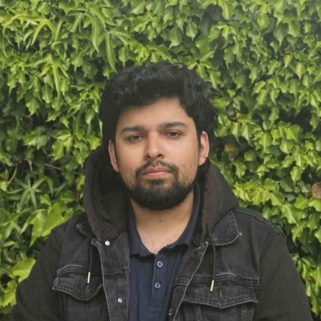

I'm a computer scientist who loves building tools that prove things correct. My PhD and postdoc have taken me from designing novel logics for infinite-alphabet systems to implementing the model checkers and solvers that bring them to life — resulting in four open-source tools and 4 peer-reviewed publications. I've also spent time in industry, leading engineering teams, integrating ML models into NHS clinical software, and shipping a cross-platform mobile app. I'm happiest at the intersection of rigorous theory and working code. Available from July 2026.
Interested in automated reasoning, formal verification, AI safety, or smart contract analysis? I'm available from July 2026 and open to both permanent and consulting roles.